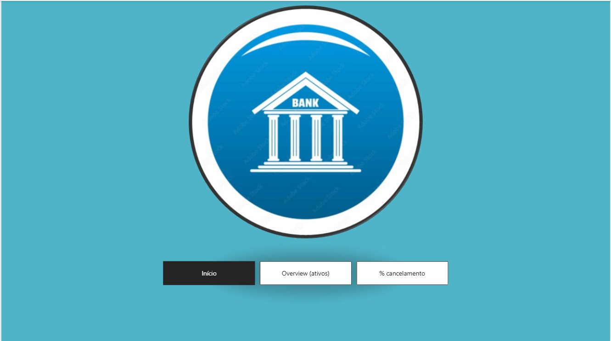
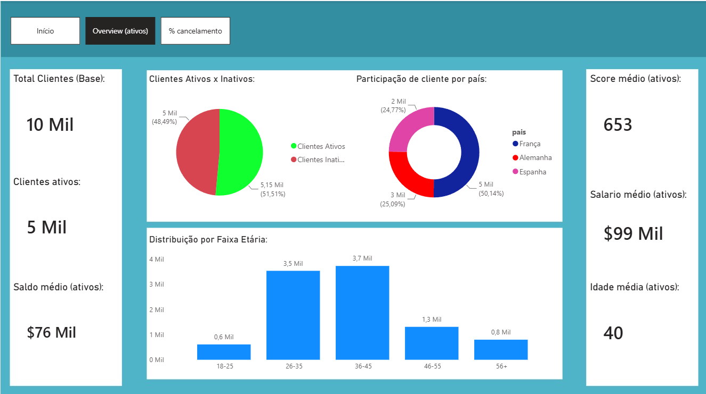
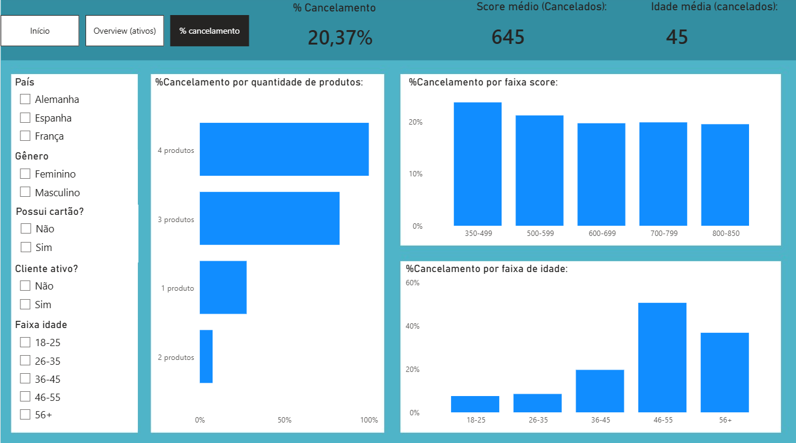

Dashboard Financeiro / Bancário
Power BI · DAX · Slicers Interativos
O problema
Dar visibilidade executiva sobre a carteira de clientes e a taxa de cancelamento, permitindo que quem está olhando filtre o período e o segmento sem precisar pedir um relatório novo toda vez.
A lógica por trás
O painel foi dividido em três páginas para separar contexto de análise:
- Início — capa de apresentação do relatório.
- Overview — cards de indicadores-chave, gráfico de rosca e um combo chart combinando volume e evolução no tempo.
- % Cancelamento — foco na taxa de cancelamento isolada, para acompanhamento de tendência.
Os slicers foram posicionados para funcionar em todas as páginas ao mesmo tempo, então filtrar por período ou segmento em uma tela já reflete nas outras.
Medidas DAX
Esse é o modelo com mais DAX dos três — quase toda a lógica de segmentação de clientes é feita por medidas, com bastante reaproveitamento de padrões:
- Qtd Clientes / Total Clientes —
COUNT(id_cliente): contagem total de clientes na base. - Clientes Ativos / Inativos — reaproveitam
[Qtd Clientes]dentro de umCALCULATE, filtrando pelo campocliente_ativo. - Clientes Cancelados — mesma lógica, filtrando
churn = "Cancelou". - % Taxa Churn —
DIVIDE([Clientes Cancelados], [Qtd Clientes]): percentual de clientes que cancelaram sobre o total. - Médias segmentadas — o padrão se repete para saldo, salário, score e idade: cada uma tem uma versão geral e versões filtradas por
cliente_ativo = "sim"ouchurn = "cancelou", permitindo comparar o perfil de quem ficou com o de quem cancelou (ex: Salário Médio ativos, Idade Média cancelados, Score Médio cancelados, Saldo Médio cancelado). - Saldo Total —
SUM(saldo): soma geral, sem filtro. - Produtos Médios —
AVERAGE(qtd_produtos): média de produtos contratados por cliente.
Print do relatório


